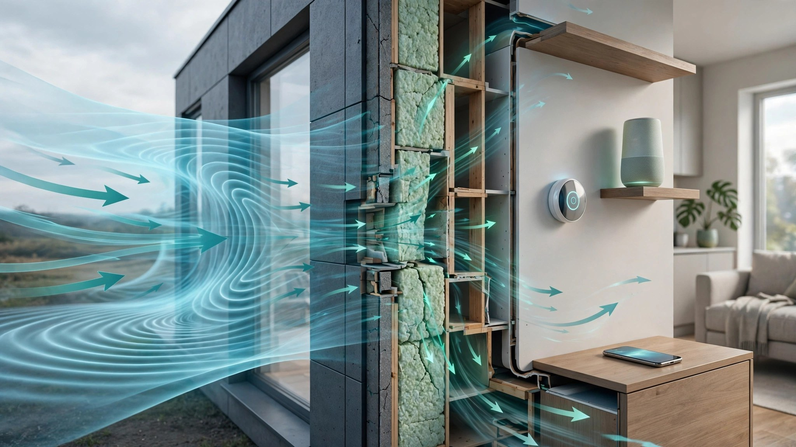

System and Method for Continuous Building Envelope Air Leakage Estimation Using Differential Barometric Pressure Spectral Analysis from Consumer IoT Devices Under Natural Wind Loading

Abstract
Disclosed is a system and method for continuously estimating building envelope air leakage rates without conventional blower door testing. The system exploits the fact that natural wind loading creates measurable differential pressure across a building envelope, and that the ratio of indoor barometric pressure fluctuation to outdoor wind-induced pressure fluctuation in the 0.01–2 Hz frequency band is a function of the building's equivalent leakage area (ELA). Distributed consumer barometric pressure sensors already present in smartphones, smart speakers, smart thermostats, and weather stations sample indoor pressure at 1–10 Hz. Outdoor wind speed, direction, and barometric pressure are obtained from nearby personal weather stations or public meteorological APIs. A convolutional neural network (CNN) regression model, trained on paired blower door test results and concurrent barometric time series from 50,000+ residential buildings, estimates the building's air changes per hour at 50 Pa (ACH50) with a target mean absolute error below 1.5 ACH50. The system enables passive, zero-cost air leakage screening at population scale, prioritizing weatherization investment toward the leakiest buildings without dispatching technicians.
Field of the Invention
This invention relates to building performance diagnostics, specifically to the passive estimation of air infiltration rates using barometric pressure measurements from consumer IoT devices and machine learning regression against wind-induced pressure differentials.
Background
Residential building envelope air leakage accounts for 25–40% of heating and cooling energy consumption in typical U.S. homes (DOE). The standard diagnostic is the blower door test, codified in ASTM E779 and ASTM E1827, which pressurizes or depressurizes a building to 50 Pa using a calibrated fan mounted in a doorway. The test yields ACH50 (air changes per hour at 50 Pa), the primary metric for envelope tightness. A typical existing U.S. home measures 5–15 ACH50; energy codes increasingly require 3–5 ACH50 for new construction (2021 IECC).
Blower door testing has significant limitations:
- Cost: $300–500 per test for residential, $1,000–5,000 for commercial. Approximately 130 million U.S. housing units (EIA RECS 2020) would require $40–65 billion to test universally.
- Access: Requires a technician on-site for 1–2 hours. All exterior doors and windows must be closed. HVAC must be disabled. Occupant scheduling is required.
- Episodic measurement: A blower door test captures a single snapshot. Envelope performance degrades over time due to settling, weatherstripping failure, caulk deterioration, and thermal cycling, but retesting is rare.
- Artificial conditions: The 50 Pa test pressure is roughly equivalent to a 20 mph wind on all surfaces simultaneously. Natural wind loading produces directional, time-varying pressure that more closely reflects real operating conditions.
Consumer barometric pressure sensors are now ubiquitous. The Bosch BMP390 (used in smartphones and smart home devices) provides absolute pressure accuracy of ±0.5 hPa and relative accuracy of ±0.03 hPa, with a noise floor of 0.008 hPa RMS at the highest oversampling setting. At 1 Hz sampling, this sensor can resolve pressure fluctuations of approximately 0.01 Pa, well below the wind-induced indoor pressure variations of interest (0.1–5 Pa in typical residential buildings under moderate wind).
The relationship between wind-induced pressure and building air leakage has been studied extensively. Shaw and Tamura (Building and Environment, 1977) established the power-law model Q = C·(ΔP)^n relating airflow Q through the envelope to pressure differential ΔP, where C is the flow coefficient (proportional to ELA) and n is the pressure exponent (typically 0.6–0.7 for residential buildings). Orme (2001) showed that natural infiltration rates under wind loading can be estimated from blower door results using the Alberta Air Infiltration Model (AIM-2), but this requires knowing local wind exposure, terrain class, and shielding.
The gap in the art is a system that reverses this relationship: given continuous measurements of indoor barometric pressure fluctuations and outdoor wind conditions, the system infers the building's equivalent leakage area and ACH50 rating without any physical test, using machine learning to account for building geometry, shielding, terrain, and sensor placement effects that are difficult to model analytically.
Detailed Description
1. Physical Basis
Wind creates pressure on a building exterior described by the wind pressure coefficient Cp: P_surface = Cp · 0.5 · ρ · V², where ρ is air density (~1.2 kg/m³) and V is wind speed at building height. Cp varies from +0.8 (windward wall) to -0.5 (leeward wall and roof) and is a function of wind angle, building geometry, and surrounding terrain (Liddament, 1986; Cóstola et al., Building and Environment 2009).
For a building with a total equivalent leakage area ELA (in cm²), the indoor pressure responds to outdoor wind pressure changes with a time constant τ = V_building / (ELA · √(2·ΔP/ρ)), where V_building is the building volume. A typical 250 m³ home with ELA = 500 cm² (moderately leaky, ~10 ACH50) and ΔP = 2 Pa has τ ≈ 15 seconds. A tight home (ELA = 150 cm², ~3 ACH50) has τ ≈ 50 seconds. This means that in the frequency domain, the transfer function from outdoor wind pressure to indoor pressure acts as a low-pass filter whose cutoff frequency is inversely proportional to building tightness.
The key insight of this disclosure is that the spectral transfer function H(f) = S_indoor(f) / S_outdoor(f), where S denotes the power spectral density of barometric pressure fluctuations, encodes information about the building's equivalent leakage area. A leaky building transmits more high-frequency pressure fluctuations from wind gusts; a tight building attenuates them. By measuring H(f) across the 0.01–2 Hz band and fitting a parametric model or training a neural network regressor, ELA and ACH50 can be estimated.
2. Sensor Infrastructure
The system requires at minimum one indoor barometric pressure sensor and one outdoor wind/pressure reference. Indoor sensors are consumer devices already present in the home:
- Smartphones: Virtually all modern smartphones contain a barometric pressure sensor (e.g., Bosch BMP380/BMP390, STMicroelectronics LPS22HH). Sampling via mobile OS APIs at 1–10 Hz. The phone must be stationary during measurement windows (detected via accelerometer stillness).
- Smart thermostats: Devices such as the Ecobee SmartThermostat and Google Nest contain barometric sensors for altitude compensation. These are permanently wall-mounted, providing stable, continuous indoor measurements.
- Smart speakers: Some smart speakers contain barometric sensors for voice assistant altitude context. These provide fixed indoor measurement points.
- Consumer weather stations: Indoor base units of personal weather stations (e.g., Ambient Weather WS-2902, Davis Vantage Vue) sample barometric pressure at 1–10 second intervals with ±0.05 hPa accuracy.
Outdoor references are obtained from:
- Personal weather stations (PWS): Over 300,000 personal weather stations report to Weather Underground in the U.S. alone, providing hyperlocal wind speed, direction, gusts, and barometric pressure. Typical PWS density in suburban areas: 2–5 stations per km².
- Outdoor sensors belonging to the same home: Consumer weather stations often include an outdoor unit with anemometer and barometer.
- National Weather Service ASOS/AWOS: Airport weather stations provide high-quality 1-minute wind and pressure data, though at lower spatial density.
3. Data Acquisition and Preprocessing
Indoor barometric pressure is sampled at a minimum of 1 Hz (10 Hz preferred for smartphones during active measurement sessions). Each sample is timestamped with NTP-synchronized device time (typical accuracy ±50 ms). The raw pressure time series undergoes:
- Trend removal: A 10-minute moving average is subtracted to remove synoptic weather-scale pressure changes, isolating the wind-induced fluctuation component.
- HVAC artifact rejection: Forced-air HVAC systems create indoor pressure fluctuations of 0.5–3 Pa when the air handler operates (positive pressure in supply rooms, negative in return rooms). These are quasi-periodic at the HVAC cycling frequency (typically 3–8 cycles/hour, or 0.001–0.002 Hz) and are identified and masked using a notch filter at the detected HVAC cycling frequency. Alternatively, the system preferentially selects measurement windows during HVAC off-cycles, detected by the absence of characteristic pressure pulses.
- Door/window event detection: Opening an exterior door or window creates a transient pressure equalization event (rapid indoor pressure change of 0.5–5 Pa over 1–3 seconds). These events are detected by a wavelet-based transient detector and excluded from the analysis window. A minimum of 20 minutes of continuous, undisturbed data is required per estimation epoch.
- Multi-sensor fusion: When multiple indoor sensors are available (e.g., smartphone in bedroom + thermostat in hallway + weather station in living room), their signals are averaged after cross-correlation alignment to reduce uncorrelated noise. The spatial variance across sensors provides additional information about internal compartmentalization and leakage distribution.
4. Spectral Transfer Function Estimation
The core measurement is the spectral transfer function H(f) between outdoor wind-induced pressure and indoor pressure fluctuations. The outdoor wind-induced pressure at the building envelope is not directly measured but is estimated from wind speed measurements using the relationship P_wind(t) = Cp_eff · 0.5 · ρ · V(t)², where Cp_eff is an effective wind pressure coefficient that accounts for the distributed leakage across all building surfaces. Cp_eff is treated as a fitted parameter or estimated from building orientation (obtained from address geolocation and building footprint databases such as Microsoft US Building Footprints).
H(f) is computed using Welch's method with Hanning-windowed segments of 256 seconds (frequency resolution 0.004 Hz), 50% overlap, and averaging over the full measurement epoch (minimum 20 minutes, preferred 2+ hours). The magnitude |H(f)| and phase ∠H(f) are computed across the band 0.01–2 Hz. For a single-zone building with uniform leakage, |H(f)| follows a first-order low-pass characteristic: |H(f)| = 1 / √(1 + (f/f_c)²), where f_c = ELA · √(2·ΔP_ref/ρ) / (2π · V_building) is the cutoff frequency. Tighter buildings have lower f_c.
The system extracts the following features from H(f):
- Cutoff frequency f_c: Estimated by fitting a first-order low-pass model to |H(f)| using least-squares regression. Primary predictor of ELA.
- Roll-off slope: The slope of |H(f)| in dB/decade above f_c. Deviations from the theoretical -20 dB/decade indicate multi-zone leakage (interior partitions creating resonances).
- Low-frequency gain: |H(f)| at f < 0.01 Hz, which approaches 1.0 for all buildings (at very low frequencies, indoor pressure tracks outdoor pressure regardless of leakage). Deviations indicate stack effect or mechanical ventilation.
- Phase lag at f_c: The phase of H(f_c) should be approximately -45° for a single-zone model. Larger phase lags indicate distributed leakage pathways with varying time constants.
- Coherence γ²(f): The magnitude-squared coherence between indoor pressure and wind speed. High coherence (γ² > 0.5) in the 0.05–0.5 Hz band indicates adequate signal-to-noise for estimation. Low coherence indicates either a very tight building (good) or high indoor noise sources (bad, requiring longer averaging).
5. Machine Learning Estimation Model
The analytical single-zone model described above provides a useful first estimate but fails to account for real-world complexity: multi-zone buildings with interior partitions of varying permeability, non-uniform leakage distribution (concentrated at windows, recessed lights, utility penetrations), stack effect (buoyancy-driven infiltration from indoor-outdoor temperature difference), mechanical ventilation (ERVs, HRVs, bathroom exhaust fans), and terrain/shielding effects on wind exposure.
A CNN regression model is trained on a dataset of paired measurements: (a) spectral transfer function features H(f) computed from consumer barometric sensor data during naturally windy periods, paired with (b) blower door test results (ACH50, ELA, flow coefficient C, pressure exponent n) from the same building within 30 days of the barometric measurement.
Training data sources include:
- Weatherization Assistance Program (WAP): The DOE WAP program conducts approximately 35,000 home energy audits annually, each including a blower door test. Historical WAP data with geocoded addresses provides blower door results that can be paired with concurrent PWS wind data.
- Home Energy Rating System (HERS): RESNET-certified HERS raters conduct approximately 150,000 home energy ratings annually for new construction and renovations, each requiring a blower door test.
- Utility weatherization programs: Many utilities (e.g., Efficiency Maine, Mass Save, NYSERDA) conduct blower door tests as part of incentive programs and maintain databases of results.
- Voluntary contributions: A companion mobile app allows homeowners who have had a blower door test to contribute their results alongside concurrent barometric data from their devices.
The model architecture is a 1D CNN with 5 convolutional layers (32/64/128/128/64 filters, kernel size 5, ReLU activation, batch normalization) operating on the log-magnitude and phase of H(f) sampled at 128 frequency bins across 0.01–2 Hz. Auxiliary inputs concatenated before the fully-connected layers include: building floor area (from tax assessor databases or user input), number of stories, year built, climate zone (from address), mean outdoor temperature during measurement (for stack effect correction), and mean wind speed during measurement. The output is a regression estimate of ln(ACH50), with ACH50 recovered via exponentiation. A separate classification head predicts a confidence category (high/medium/low) based on measurement quality indicators.
Target performance: mean absolute error < 1.5 ACH50 (sufficient to distinguish between "tight" (<5 ACH50), "moderate" (5–10 ACH50), and "leaky" (>10 ACH50) categories with >85% accuracy). This level of accuracy is sufficient for population-scale screening and weatherization prioritization, though not for code compliance verification.
6. Continuous Monitoring and Degradation Detection
Because the measurement is passive and continuous, the system tracks envelope performance over time. A Bayesian state estimator maintains a running estimate of ACH50 with uncertainty bounds, updated with each valid measurement epoch (typically 1–3 epochs per day during windy conditions). The system detects envelope degradation as a statistically significant upward trend in estimated ACH50 over weeks to months, generating alerts when:
- Estimated ACH50 increases by more than 2 units from the established baseline (indicating new air leakage pathway, such as failed weatherstripping, cracked caulk, or structural settling).
- The spectral shape of H(f) changes qualitatively (e.g., appearance of a new resonance peak indicating a concentrated leak opening in one zone).
- The coherence between indoor pressure and wind speed suddenly increases across all frequencies (indicating a large new opening, such as a failed window seal or ductwork disconnection in an unconditioned space).
7. Population-Scale Screening and Weatherization Prioritization
When deployed across a utility service territory or municipality, the system generates a geo-spatial map of estimated building envelope performance. This enables:
- Weatherization program targeting: Identify the leakiest 10% of buildings in a zip code for prioritized outreach, increasing weatherization program cost-effectiveness by directing limited funds toward buildings with the highest energy savings potential.
- Code compliance screening: Flag new construction that may not meet the required ACH50 threshold for targeted blower door verification, reducing the number of physical tests needed while maintaining compliance confidence.
- Portfolio energy modeling: Building owners and managers with multiple properties can compare envelope performance across their portfolio without commissioning individual blower door tests for each building.
- Real estate transaction disclosure: Provide prospective buyers with an estimated air leakage rating as part of a home energy profile, similar to a fuel economy rating for vehicles.
- Climate policy monitoring: Track the aggregate improvement in building stock envelope performance over time as weatherization investments are made, providing municipalities with quantitative evidence of program impact.
8. Figures Description
- Figure 1: System architecture showing indoor barometric sensors (smartphone, thermostat, smart speaker), outdoor wind reference (personal weather station, NWS ASOS), data aggregation via cloud or edge processing, and CNN regression model producing ACH50 estimate.
- Figure 2: Example spectral transfer functions |H(f)| for three buildings with different air leakage rates (3 ACH50 tight, 8 ACH50 moderate, 15 ACH50 leaky), showing the characteristic low-pass behavior with cutoff frequency shifting rightward for leakier buildings.
- Figure 3: Time-domain comparison of outdoor wind-induced pressure fluctuations (top) and indoor barometric pressure fluctuations (bottom) for a leaky building (high correlation, fast response) versus a tight building (attenuated, delayed response).
- Figure 4: Geo-spatial heatmap of estimated ACH50 values across a suburban utility service territory, with color coding from green (tight, <5 ACH50) through yellow (moderate, 5–10 ACH50) to red (leaky, >10 ACH50), overlaid on building footprints.
- Figure 5: Longitudinal tracking of estimated ACH50 for a single building over 12 months, showing seasonal variation, measurement uncertainty bounds, and an alert triggered by sudden increase due to weatherstripping failure.
Claims
- A system for estimating building envelope air leakage rates without blower door testing, comprising: one or more indoor barometric pressure sensors present in consumer IoT devices (smartphones, smart thermostats, smart speakers, or personal weather station base units); one or more outdoor wind speed and barometric pressure references; a signal processing module that computes the spectral transfer function between outdoor wind-induced pressure fluctuations and indoor barometric pressure fluctuations in the 0.01–2 Hz frequency band; and a machine learning regression model that estimates the building's air changes per hour at 50 Pa (ACH50) from the spectral transfer function and building metadata.
- The system of claim 1, wherein the spectral transfer function is computed using Welch's method with a minimum measurement epoch of 20 minutes of undisturbed indoor pressure data during periods when outdoor wind speed exceeds a configurable threshold (default: 3 m/s sustained).
- The system of claim 1, further comprising an HVAC artifact rejection module that identifies and masks indoor pressure fluctuations caused by forced-air heating and cooling system cycling, using either notch filtering at the detected HVAC cycling frequency or selective measurement during HVAC off-cycles.
- The system of claim 1, further comprising a door/window event detector that identifies transient pressure equalization events caused by exterior door or window openings and excludes affected time segments from the spectral analysis.
- The system of claim 1, wherein building metadata inputs to the regression model include one or more of: building floor area, number of stories, year of construction, climate zone, mean outdoor temperature during the measurement epoch, and building orientation relative to prevailing wind direction.
- The system of claim 1, wherein the machine learning regression model is a convolutional neural network trained on paired datasets of spectral transfer function features and blower door test results from the same buildings, with training data sourced from weatherization programs, home energy rating assessments, and voluntary homeowner contributions.
- A method for continuous building envelope performance monitoring comprising: passively collecting indoor barometric pressure data from consumer IoT devices at 1 Hz or higher; obtaining concurrent outdoor wind speed and pressure data from nearby weather references; computing spectral transfer functions between outdoor wind pressure and indoor pressure during valid measurement epochs; estimating ACH50 using a trained regression model; maintaining a Bayesian state estimate of ACH50 over time with uncertainty bounds; and generating alerts when the estimated ACH50 increases beyond a configurable threshold from the established baseline, indicating envelope degradation.
- The method of claim 7, wherein the system detects envelope degradation by monitoring for statistically significant upward trends in estimated ACH50, qualitative changes in spectral transfer function shape indicating new concentrated leakage pathways, or sudden increases in coherence between indoor pressure and wind speed indicating large new openings.
- A method for population-scale building weatherization prioritization comprising: collecting passive barometric air leakage estimates from consumer IoT devices across a geographic region; generating a geo-spatial map of estimated building envelope performance; identifying buildings with highest estimated air leakage rates; and prioritizing weatherization program outreach to those buildings to maximize energy savings per dollar invested.
- The system of claim 1, wherein multiple indoor barometric sensors are fused by cross-correlation alignment and averaging to reduce uncorrelated noise, and wherein the spatial variance of pressure measurements across sensors provides information about internal compartmentalization and leakage distribution within the building.
Implementation Notes
A reference implementation is feasible using the following components: a mobile application sampling the device barometric sensor via Android SensorManager (TYPE_PRESSURE) or iOS CMAltimeter at 10 Hz; a cloud backend aggregating indoor pressure time series with concurrent wind data from the Weather Underground API (up to 5-minute resolution from nearby PWS) or NOAA ASOS 1-minute data; spectral analysis using NumPy/SciPy (scipy.signal.csd for cross-spectral density, scipy.signal.welch for auto-spectral density); and a TensorFlow or PyTorch CNN regression model. Training dataset assembly would require partnerships with DOE WAP grantees, RESNET-certified HERS providers, and utility weatherization programs to obtain paired blower door results and concurrent timestamps for barometric data retrieval.
Key calibration challenges include: (a) wind exposure estimation, as buildings in dense urban environments experience significantly different wind profiles than those in open suburban settings; (b) stack effect interference, as indoor-outdoor temperature differentials create buoyancy-driven pressure gradients that modulate the wind-induced signal; and (c) mechanical ventilation, as ERVs, HRVs, and exhaust fans create intentional pressure differentials that must be distinguished from envelope leakage. These are addressable through the ML model's auxiliary inputs and through temporal filtering (stack effect is quasi-static; wind-induced fluctuations are dynamic).
Prior Art References
- DOE Energy Saver — Air Sealing Your Home — Air leakage accounts for 25–40% of HVAC energy in typical homes
- ASTM E779-19 — Standard test method for determining air leakage rate by fan pressurization
- ASTM E1827-11(2017) — Standard test methods for determining airtightness using an orifice blower door
- EIA RECS 2020 — 130 million U.S. housing units
- DOE Weatherization Assistance Program — ~35,000 annual home energy audits
- RESNET HERS Index — ~150,000 annual home energy ratings
- Shaw & Tamura, Building and Environment (1977) — Power-law model Q = C·(ΔP)^n for building air leakage
- Orme, AIVC Technical Note 55 (2001) — AIM-2 model for natural infiltration estimation from blower door results
- Liddament, Air Infiltration Calculation Techniques (1986) — Wind pressure coefficients for buildings
- Cóstola et al., Building and Environment (2009) — Overview of wind pressure coefficient data for building energy simulation
- Bosch BMP390 — MEMS barometric pressure sensor (±0.03 hPa relative accuracy, 0.008 hPa RMS noise)
- Microsoft US Building Footprints — 130M+ building footprint polygons for the U.S.
- Weather Underground Personal Weather Stations — 300,000+ PWS in the U.S.
- 2021 IECC — International Energy Conservation Code air leakage requirements